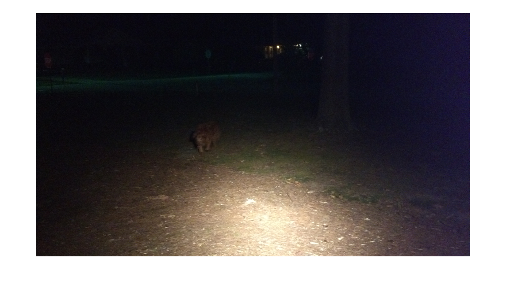
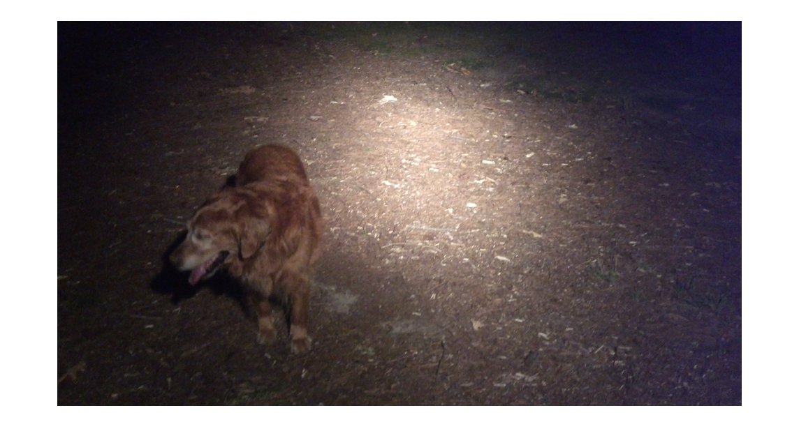

Making a Slideshow GIF
Our goal here is to take a sequence of somewhat similar images and create a slideshow in which the most similar parts of the image have been aligned. We can do this with the tools create_animation_stack and write_animation_stack.
Contents
Importing and Preparing Source Images
First, import a sequence of RBG images. Here, I have already imported night1 through night6. These images do not need to have the same dimensions, but they should all have been taken at about the same time and from the about the same place. It is fine if the camera changes orientation between shots. For instance compare night1 with night6:
imshow(imresize(night1,0.3));
imshow(imresize(night6,0.3));
It is best if these images already have approximately the same histogram. If some of the images have very bright or very dark spots that the other images don't have (or, in particular, which the image that frames the scene in the way you most prefer does not have), it is best to crop these parts of the image out in advance. Speaking of which, this process requires the images be in a cell array, where the first element is the image which has the desired point of view. I prefer the framing of night6.
seq = {night6,night5,night4,night3,night2,night1};
Registering and Overlapping the Images
The remainder of this process is incredibly easy, since the tools do all the heavy lifting. First, we need to register the images and overlay them with the first image in the sequence. Since the images are so small, we'll bleed the edges of the image parts into one another by only 5 pixels. This step may take a minute, so go grab a snack while you wait.
seq = create_animation_stack(seq,5);
Create the Slide Show and Save it to a GIF
We want to save a slide show of these aligned images to a GIF. First, note that this process will create very large files if the source images are very large. So let's make these images much smaller.
for i=1:6 seq{i}=imresize(seq{i},0.1); end
Actually creating the file is easy, but some more decisions must be made here: should the slide show loop? Should consecutive images dissolve into each other? How slow should the dissolve be? How long should each image be displayed? Here, we'll allow the slideshow to loop forever, with each image being displayed for 1.5 seconds and spending 10 tenths of a second dissolving from one image into the next. We'll save the result to night.gif.
write_animation_stack(fliplr(seq), 'night.gif', 10, 1.5, 1);
Writing Frame 1 Writing Frame 2 Writing Frame 3 Writing Frame 4 Writing Frame 5 Writing Frame 6

Single Image Action Shot
It is also possible to layer all these images into a single image using action_shot, though this will require much more user input. Call it with arguments like those you used for create_animation_stack, and then select the part of each image you want to to preserve in the final by drawing polygons around them. The tighter you make the polygons around the parts you wish to preserve, the better the final result will look.
combined = action_shot(seq,5);